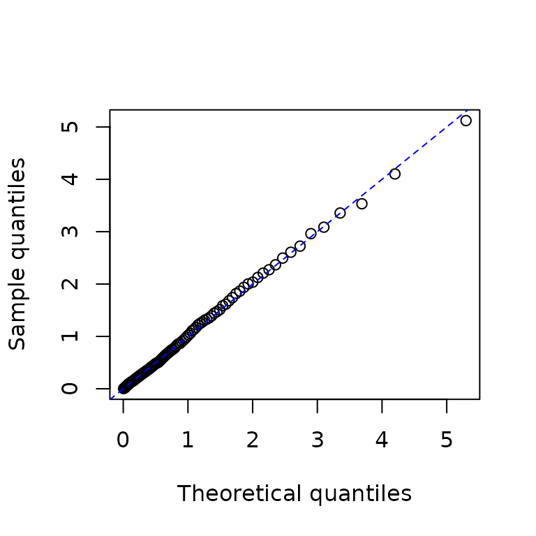

This vignette introduces model specification, simulation, estimation and a first residual check. It is included in the R package and also published on the website. For more models, see Examples overview.
Basic Hawkes model
Univariate Hawkes process
This section shows how to specify, simulate, and fit a univariate
Hawkes model. First, create an hspec object to define the
model. The S4 class hspec includes slots such as
mu, alpha, beta,
dimens, rmark, and impact.
In a univariate model, mu, alpha, and
beta can be supplied as numeric values, which are converted
to matrices. The following example defines an unmarked univariate Hawkes
model.
mu1 <- 0.3; alpha1 <- 1.2; beta1 <- 1.5
hspec1 <- new("hspec", mu = mu1, alpha = alpha1, beta = beta1)
show(hspec1)
#> An object of class "hspec" of 1-dimensional Hawkes process
#>
#> Slot mu:
#> [,1]
#> [1,] 0.3
#>
#> Slot alpha:
#> [,1]
#> [1,] 1.2
#>
#> Slot beta:
#> [,1]
#> [1,] 1.5The hsim function simulates a path from an
hspec object. The size argument specifies the
number of rows, including the initial state. The optional arguments
lambda_component0 and N0 specify the initial
intensity components and event counts, respectively. The intensity of
the basic univariate Hawkes model is
where lambda_component0 denotes
The default lambda_component0 = "auto" uses
unconditional component means for supported stable constant numeric
linear models, and zero components otherwise. The selected rule is
reported in a message; zero initialization recommends supplying
components explicitly. Use "mean" to require supported
finite means, "zero" to start from baseline intensities, or
a scalar/matrix to specify the components directly. Mean initialization
is deterministic and does not sample a stationary initial state. For a
sufficiently long simulation of a stable model, the effect of the
initial intensity diminishes over time. The default initial value of the
counting process, N0, is zero.
set.seed(1107)
res1 <- hsim(hspec1, size = 1000)
#> Initial intensity components: auto -> mean (unconditional component means).
summary(res1)
#> -------------------------------------------------------
#> Simulation result of exponential (marked) Hawkes model.
#> Realized path :
#> arrival N1 mark lambda1
#> [1,] 0.00000 0 0 1.50000
#> [2,] 0.68807 1 1 0.72751
#> [3,] 0.80014 2 1 1.67567
#> [4,] 0.97835 3 1 2.27150
#> [5,] 1.19847 4 1 2.57966
#> [6,] 1.30725 5 1 3.25578
#> [7,] 2.17530 6 1 1.43023
#> [8,] 2.47434 7 1 1.78797
#> [9,] 2.53174 8 1 2.76622
#> [10,] 2.81626 9 1 2.69260
#> [11,] 3.16047 10 1 2.44375
#> [12,] 3.85436 11 1 1.48087
#> [13,] 16.59833 12 1 0.30000
#> [14,] 17.34735 13 1 0.69015
#> [15,] 18.73374 14 1 0.49874
#> [16,] 23.69435 15 1 0.30082
#> [17,] 23.72337 16 1 1.44967
#> [18,] 28.03254 17 1 0.30366
#> [19,] 28.16824 18 1 1.28198
#> [20,] 28.19783 19 1 2.38725
#> ... with 980 more rows
#> -------------------------------------------------------The hsim function returns an S3 object of class
hreal with the following components.
hspecis the model specification.inter_arrivalcontains the times between consecutive events.arrivalis the cumulative sum ofinter_arrival.typeidentifies the counting process associated with each event: type corresponds to .markcontains the mark associated with each event.Ncontains the cumulative event counts for each type.Nccontains the cumulative marks for each type.lambdacontains the intensity immediately before each event.rambdacontains the intensity immediately after each event.lambda_componentandrambda_componentcontain the intensity components immediately before and after each event, respectively.
With the default initial values, inter_arrival,
type, mark, N, and
Nc begin with zero. The summary() function
displays the first 20 rows of the realized path by default. The
print() function also displays the model specification and
intensity components.
In this univariate model,
lambda == mu + lambda_component.
# The first and third columns are equal.
cbind(res1$lambda[1:5], res1$lambda_component[1:5], mu1 + res1$lambda_component[1:5])
#> [,1] [,2] [,3]
#> [1,] 1.5000000 1.2000000 1.5000000
#> [2,] 0.7275103 0.4275103 0.7275103
#> [3,] 1.6756694 1.3756694 1.6756694
#> [4,] 2.2714992 1.9714992 2.2714992
#> [5,] 2.5796567 2.2796567 2.5796567For all rows except the first, rambda equals
lambda + alpha in this model.
# The second and third columns are equal except in the initial row.
cbind(res1$lambda[1:5], res1$rambda[1:5], res1$lambda[1:5] + alpha1)
#> [,1] [,2] [,3]
#> [1,] 1.5000000 1.500000 2.700000
#> [2,] 0.7275103 1.927510 1.927510
#> [3,] 1.6756694 2.875669 2.875669
#> [4,] 2.2714992 3.471499 3.471499
#> [5,] 2.5796567 3.779657 3.779657The following calculation verifies the exponential decay between events.
# By definition, the following two are equal:
res1$lambda[2:6]
#> [1] 0.7275103 1.6756694 2.2714992 2.5796567 3.2557793
mu1 + (res1$rambda[1:5] - mu1) * exp(-beta1 * res1$inter_arrival[2:6])
#> [1] 0.7275103 1.6756694 2.2714992 2.5796567 3.2557793Use logLik to evaluate the log-likelihood from the model
specification and observed inter-arrival times.
logLik(hspec1, inter_arrival = res1$inter_arrival)
#> Initial intensity components: auto -> mean (unconditional component means).
#> loglikelihood
#> -213.4226Use hfit for maximum likelihood estimation. The
hspec0 object supplies the initial parameter values for
optimization. For this univariate model, inter_arrival is
the only required data argument. If the initial intensity component is
known, pass it as lambda_component0; otherwise, the
function determines it internally. The default optimization method is
BFGS.
# Initial parameter values for numerical optimization.
mu0 <- 0.5; alpha0 <- 1.0; beta0 <- 1.8
hspec0 <- new("hspec", mu = mu0, alpha = alpha0, beta = beta0)
# Supply the initial values through hspec0.
mle <- hfit(hspec0, inter_arrival = res1$inter_arrival)
#> Initial intensity components: auto -> mean (unconditional component means).
summary(mle)
#> --------------------------------------------
#> Maximum Likelihood estimation
#> BFGS maximization, 24 iterations
#> Return code 0: successful convergence
#> Log-Likelihood: -212.6902
#> 3 free parameters
#> Estimates:
#> Estimate Std. error t value Pr(> t)
#> mu1 0.33554 0.03494 9.604 <2e-16 ***
#> alpha1 1.16515 0.09938 11.725 <2e-16 ***
#> beta1 1.51820 0.12947 11.727 <2e-16 ***
#> ---
#> Signif. codes: 0 '***' 0.001 '**' 0.01 '*' 0.05 '.' 0.1 ' ' 1
#> --------------------------------------------Use fitted_hspec() to reconstruct the estimated model
and fit_initial_state() to reuse its initial-state
settings. The fit remains a maxLik object.
coef(), summary(), and vcov()
provide the usual estimation results.
estimated <- fitted_hspec(mle)
initial <- fit_initial_state(mle)
inferred <- do.call(logLik, c(list(object = estimated,
inter_arrival = res1$inter_arrival, infer = TRUE), initial))
c(fitted = as.numeric(logLik(mle)), restored = inferred$loglikelihood)
#> fitted restored
#> -212.6902 -212.6902
head(inferred$lambda)
#> lambda1
#> [1,] 1.4429344
#> [2,] 0.7251523
#> [3,] 1.6470433
#> [4,] 2.2251136
#> [5,] 2.5224834
#> [6,] 3.1773322
head(inferred$res_process1)
#> [1] 0.1978360 0.4464937 0.6454466 0.3726250 2.2239999 0.6382222A first residual check
For an ordinary Hawkes model, integrated-intensity residuals should follow an exponential distribution with rate 1 when the model is adequate. Compare their quantiles with the reference distribution.
p <- ppoints(100)
q <- quantile(inferred$res_process1, probs = p)
plot(qexp(p), q, xlab = "Theoretical quantiles", ylab = "Sample quantiles")
abline(0, 1, col = "blue", lty = 2)
By default, hfit() uses the final Hessian and standard
errors from maxLik. For saved fits, new simulations, fuller
residual diagnostics and optional final_hessian = "stable"
checks, see Fitting
and inference. A stable Hessian alone does not establish reliable
confidence intervals.
Bivariate Hawkes model
The intensity process of a basic bivariate Hawkes model is defined by
For this bivariate model, mu is a 2-by-1 matrix, and
alpha and beta are 2-by-2 matrices.
rmark generates marks during simulation and can be
omitted for unmarked models. The 2-by-2 matrix
lambda_component0 specifies the initial values of
lambda11, lambda12, lambda21, and
lambda22. The intensity processes are represented by
The terms
are called intensity components, and lambda_component0
specifies their initial values
.
If lambda_component0 is omitted, the function determines
these values internally.
mu2 <- matrix(c(0.2), nrow = 2)
alpha2 <- matrix(c(0.5, 0.9, 0.9, 0.5), nrow = 2, byrow = TRUE)
beta2 <- matrix(c(2.25, 2.25, 2.25, 2.25), nrow = 2, byrow = TRUE)
hspec2 <- new("hspec", mu=mu2, alpha=alpha2, beta=beta2)
print(hspec2)
#> An object of class "hspec" of 2-dimensional Hawkes process
#>
#> Slot mu:
#> [,1]
#> [1,] 0.2
#> [2,] 0.2
#>
#> Slot alpha:
#> [,1] [,2]
#> [1,] 0.5 0.9
#> [2,] 0.9 0.5
#>
#> Slot beta:
#> [,1] [,2]
#> [1,] 2.25 2.25
#> [2,] 2.25 2.25Use hsim to simulate the model.
set.seed(1107)
res2 <- hsim(hspec2, size=1000)
#> Initial intensity components: auto -> mean (unconditional component means).
summary(res2)
#> -------------------------------------------------------
#> Simulation result of exponential (marked) Hawkes model.
#> Realized path :
#> arrival N1 N2 mark lambda1 lambda2
#> [1,] 0.00000 0 0 0 0.52941 0.52941
#> [2,] 0.57028 1 0 1 0.29130 0.29130
#> [3,] 1.66175 1 1 1 0.25073 0.28505
#> [4,] 2.17979 1 2 1 0.49638 0.38238
#> [5,] 2.47685 1 3 1 0.81319 0.54975
#> [6,] 2.64001 2 3 1 1.24825 0.78866
#> [7,] 2.70249 3 3 1 1.54519 1.49341
#> [8,] 2.94547 4 3 1 1.26810 1.46968
#> [9,] 3.39313 4 4 1 0.77271 0.99242
#> [10,] 3.52533 4 5 1 1.29379 1.15989
#> [11,] 3.56971 5 5 1 2.00432 1.52115
#> [12,] 3.70761 5 6 1 1.88965 1.82866
#> [13,] 4.30122 5 7 1 0.88106 0.75983
#> [14,] 4.34337 6 7 1 1.63800 1.16393
#> [15,] 4.40222 7 7 1 1.89764 1.83275
#> [16,] 4.58943 8 7 1 1.64219 1.86211
#> [17,] 5.14665 9 7 1 0.75437 0.93131
#> [18,] 5.18186 9 8 1 1.17407 1.70707
#> [19,] 5.36167 9 9 1 1.45050 1.53925
#> [20,] 5.89118 10 9 1 0.85331 0.75875
#> ... with 980 more rows
#> -------------------------------------------------------In multivariate models, type identifies the counting
process associated with each event.
# A bivariate model has two event types: 1 and 2.
res2$type[1:10]
#> [1] 0 1 2 2 2 1 1 1 2 2In multivariate models, the column names of N are
N1, N2, N3, and so on.
res2$N[1:3, ]
#> N1 N2
#> [1,] 0 0
#> [2,] 1 0
#> [3,] 1 1Similarly, the column names of lambda are
lambda1, lambda2, lambda3, and so
on.
res2$lambda[1:3, ]
#> lambda1 lambda2
#> [1,] 0.5294118 0.5294118
#> [2,] 0.2913028 0.2913028
#> [3,] 0.2507301 0.2850475In this bivariate model, the columns of lambda_component
are lambda11, lambda12, lambda21,
and lambda22.
res2$lambda_component[1:3, ]
#> lambda11 lambda12 lambda21 lambda22
#> [1,] 0.11764706 0.211764706 0.21176471 0.117647059
#> [2,] 0.03260813 0.058694641 0.05869464 0.032608134
#> [3,] 0.04569443 0.005035631 0.08224997 0.002797573By definition, the following two expressions are equivalent:
mu2[1] + rowSums(res2$lambda_component[1:5, c("lambda11", "lambda12")])
#> [1] 0.5294118 0.2913028 0.2507301 0.4963769 0.8131889
res2$lambda[1:5, "lambda1"]
#> [1] 0.5294118 0.2913028 0.2507301 0.4963769 0.8131889Extract the observed inter_arrival and type
vectors from the simulation result. Both are required to fit a bivariate
model.
inter_arrival2 <- res2$inter_arrival
type2 <- res2$typeUse logLik to evaluate the log-likelihood.
logLik(hspec2, inter_arrival = inter_arrival2, type = type2)
#> Initial intensity components: auto -> mean (unconditional component means).
#> loglikelihood
#> -974.2809Use hfit to estimate the parameters from
inter_arrival and type. The values of
mu, alpha, and beta in
hspec0 provide starting points for optimization. Here, we
use the simulation parameters by setting
hspec0 <- hspec2. For observed data, choose initial
values because the true parameters are unknown.
By default, reduced = TRUE groups equal starting values
within each parameter matrix. Here, the two entries of mu
share one parameter, the diagonal and off-diagonal entries of
alpha give two parameters, and all entries of
beta share one parameter. The fit therefore estimates four
parameters. hfit prints a short explanation once before
optimization.
hspec0 <- hspec2
mle <- hfit(hspec0, inter_arrival = inter_arrival2, type = type2)
#> Initial intensity components: auto -> mean (unconditional component means).
#> hfit: equal starting values within each matrix share a parameter (reduced = TRUE; mu, alpha, beta).
#> Use reduced = FALSE to estimate matrix entries separately.
summary(mle)
#> --------------------------------------------
#> Maximum Likelihood estimation
#> BFGS maximization, 33 iterations
#> Return code 0: successful convergence
#> Log-Likelihood: -970.1408
#> 4 free parameters
#> Estimates:
#> Estimate Std. error t value Pr(> t)
#> mu1 0.19095 0.01638 11.656 < 2e-16 ***
#> alpha1.1 0.48217 0.07430 6.489 8.64e-11 ***
#> alpha1.2 0.98625 0.09576 10.300 < 2e-16 ***
#> beta1.1 2.07987 0.17203 12.091 < 2e-16 ***
#> ---
#> Signif. codes: 0 '***' 0.001 '**' 0.01 '*' 0.05 '.' 0.1 ' ' 1
#> --------------------------------------------
coef(mle)
#> mu1 alpha1.1 alpha1.2 beta1.1
#> 0.1909541 0.4821725 0.9862541 2.0798690
miscTools::stdEr(mle)
#> mu1 alpha1.1 alpha1.2 beta1.1
#> 0.01638200 0.07430500 0.09575744 0.17202504The restored matrices retain the shared parameters from this fit. The
diagonal entries of alpha remain equal, as do its
off-diagonal entries.
estimated2 <- fitted_hspec(mle)
estimated2@alpha
#> [,1] [,2]
#> [1,] 0.4821725 0.9862541
#> [2,] 0.9862541 0.4821725
estimated2@beta
#> [,1] [,2]
#> [1,] 2.079869 2.079869
#> [2,] 2.079869 2.079869Set reduced = FALSE to estimate all ten matrix entries
separately, even when their starting values are equal. Use
suppressMessages(hfit(...)) to hide the startup
explanation. For function components, parameters with the same name are
shared under either setting. A zero in a numeric matrix is an estimated
starting value; use a component function to fix selected entries at
zero.
Observed data and initial state
The first row represents the initial state and is not an event. For event times measured from the observation start, prepare the input as follows:
Omit type for a univariate model and mark
for unit marks. The vectors must have the same length; event types range
from 1 to the model dimension. Event order is preserved, including
events at the same time. The likelihood currently ends at the last
supplied event.
N0 and Nc0 specify initial event counts and
mark totals. Pass Nc0 by name in hfit, and use
the same initial state when comparing simulation and likelihood results.
lambda_component0 can be a scalar or a matrix matching
alpha and beta. If supplied, N
and Nc must have one row per input row and one column per
dimension, and must agree with the events and initial counts. Their rows
contain the cumulative values after each event.
Choosing the optimizer
hfit() uses the optional maxLik package by default. To
use R’s optimization functions directly, select
optimizer = "stats"; likelihood engine selection and model
specification are unchanged. This route also works without maxLik. The
earlier fitting examples require maxLik and are not evaluated when it is
unavailable.
library(emhawkes)
poisson <- new("hspec", mu = 0.5, alpha = 0, beta = 1)
fit_stats <- hfit(poisson, c(0, 0.2, 0.3, 0.5), optimizer = "stats",
lambda_component0 = 0, fixed = c(FALSE, TRUE, TRUE),
control = list(maxit = 500, reltol = 1e-12))
summary(fit_stats)
#> Hawkes maximum likelihood fit (stats::optim, BFGS)
#> Log likelihood: 0.2958369
#> Convergence code: 0 (Normal convergence.)
#> Estimate Std. Error z value Pr(>|z|)
#> mu1 3.0000 1.7321 1.7321 0.08326 .
#> alpha1 0.0000 0.0000 NA NA
#> beta1 1.0000 0.0000 NA NA
#> ---
#> Signif. codes: 0 '***' 0.001 '**' 0.01 '*' 0.05 '.' 0.1 ' ' 1
#> Fixed parameters: alpha1, beta1
fit_diagnostics(fit_stats)$computation$optimizer
#> $requested
#> [1] "stats"
#>
#> $used
#> [1] "optim"
#>
#> $method
#> [1] "BFGS"The stats route supports BFGS, Nelder-Mead, CG and L-BFGS-B. Linear
inequality constraints use constrOptim() and require an
interior starting point; equality constraints are not supported. Use
control$maxit rather than maxLik’s iterlim. It
defaults to stable final curvature; boundary estimates have no Wald
covariance. Use fitted_hspec() and
fit_initial_state() with either provider. Changing
providers does not guarantee identical estimates or cure convergence and
identification problems.
Further reading
- Fitting and inference: parameter settings, initial states, fitted models, residual diagnostics and standard errors.
- Examples overview: separate articles on multi-kernel models, marks, state-dependent baselines and state-dependent impact, with an FRPP migration note.
- FRPP examples: custom residual laws in the separate frpp package; simple cases remain supported in emhawkes.
- Computation: likelihood engines, analytic gradients, Jacobians and performance.
- Reference: function arguments and return values.